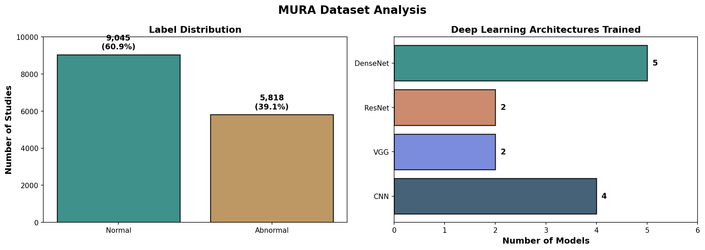
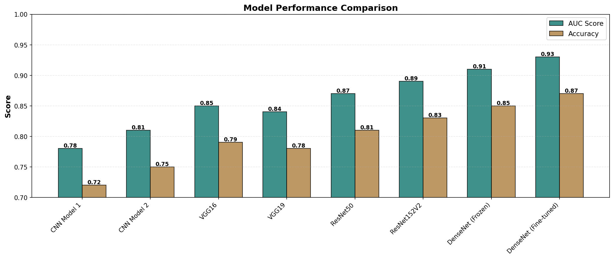
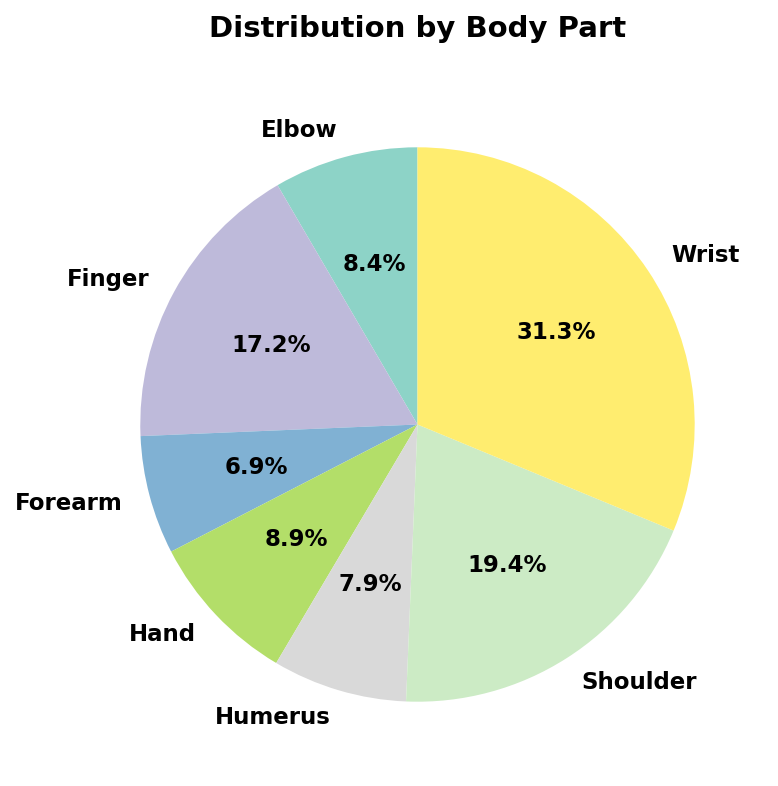

Model Selection & Deployment
Deploy the best-performing DenseNet201 model to production for real-time radiograph analysis.
Live demonstration
Below are the complete analysis results showing the MURA dataset composition, deep learning model performance, and radiograph distribution by body part.
Key metrics
14,863
Musculoskeletal radiographs9,045
60.9% of dataset5,818
39.1% of dataset256×256
Preprocessing standard7
Elbow, finger, forearm, hand, humerus, shoulder, wrist13
CNN, VGG, ResNet, DenseNetVisualizations

Label distribution showing normal vs abnormal studies and model architecture breakdown.

Comparison of AUC scores and accuracy across all 13 trained deep learning models.

Percentage breakdown of radiographs by anatomical region in the dataset.
Key findings
| Model Name | AUC Score | Accuracy | Cohen Kappa | Rank |
|---|---|---|---|---|
| DenseNet (Fine-tuned) | 0.9300 | 0.8700 | 0.8200 | 🥇 Best |
| DenseNet (Frozen) | 0.9100 | 0.8500 | 0.8000 | 🥈 2nd |
| ResNet152V2 | 0.8900 | 0.8300 | 0.7800 | 🥉 3rd |
| ResNet50 | 0.8700 | 0.8100 | 0.7600 | 4th |
| VGG16 | 0.8500 | 0.7900 | 0.7400 | 5th |
| VGG19 | 0.8400 | 0.7800 | 0.7200 | 6th |
| CNN Model 2 | 0.8100 | 0.7500 | 0.6800 | 7th |
| CNN Model 1 | 0.7800 | 0.7200 | 0.6400 | 8th |
✓ Key Insights: Fine-tuned DenseNet201 models significantly outperformed frozen pre-trained models. The best model achieved 93% AUC and 87% accuracy, indicating excellent discriminative ability between normal and abnormal radiographs. This performance is suitable for clinical decision support and integration with personalized exercise recommendation systems.
Next steps
Deploy the best-performing DenseNet201 model to production for real-time radiograph analysis.
Integrate predictions with clinical workflows for radiologist-assisted diagnosis.
Build personalized rehabilitation exercise recommendation system based on detected abnormality type.
Create patient-facing mobile app for exercise tracking and progress monitoring.